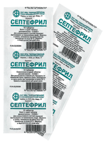

У серпні 1886 р Харківське медичне товариство вирішило створити Інститут вакцинації Пастера і бактеріологічну станцію, які були відкриті 20 квітня 1887 г. Першими директорами було призначено У. У. Мотте і Н. А. Протопопов. Становлення і розвиток інституту відбувалося в контексті боротьби з епідеміями страшних інфекційних захворювань.
Full History »FEMS is leading the way in promoting excellence and equality in science, and in channelling high quality knowledge to solving todays societal problems around microbiology. FEMS' vision is to coordinate and lead the acquisition of scientific knowledge and innovation in microbiology and to maximise communication of this knowledge, and its importance, to scientists, politicians, policy makers, industry and the general public.. .